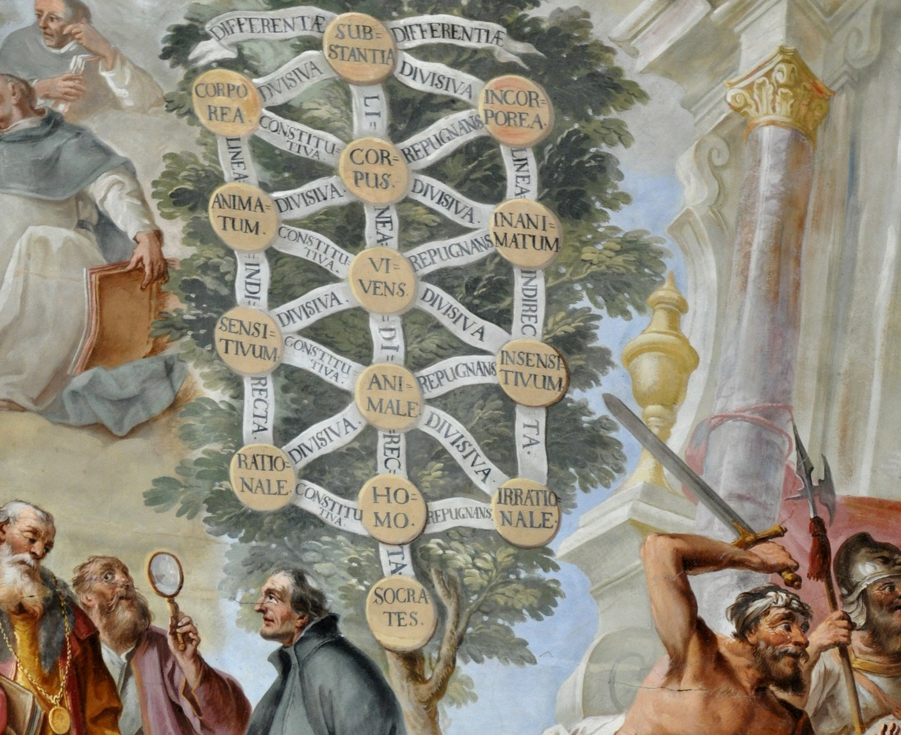

Ontologie: symbolická linie
Původ, filosofie bytí, co existuje — a jak se to začalo kategorizovat.
Jedna otázka, kladená dvacet čtyři století.
Co existuje? Quinova odpověď — všechno — je proslulá tím, že je správná a k ničemu. Zajímavá nikdy nebyla odpověď. Zajímavá byla mašinerie, kterou musíš postavit, než ta odpověď začne něco znamenat: co se počítá za věc, co se počítá za druh, a kdo o tom rozhoduje.
Tenhle text sleduje jednu nit: symbolickou linii — tradici, která tvrdí, že bytí lze rozkrájet na pojmenované kategorie, uspořádat do struktury a zapsat. Vede rovnou čarou od řeckého seznamu deseti položek ke specifikaci W3C, a ta čára není metafora. Aristotelovy Kategorie se do dnešního softwaru dostaly řetězem překladů, z nichž každý je doložený a datovatelný.
Existuje i soupeřící tradice — bytí jako tok, proces, dění, nevyslovitelné — vedoucí od Hérakleita přes Whiteheada ke konekcionistům. Objevuje se tu jen tam, kde do té symbolické narazí, a poslední oddíl tvrdí, že ta srážka je právě teď to nejzajímavější, co se v oboru děje.
Poznámka ke slovu. „Ontologie" je asi o dva tisíce let mladší než to, co pojmenovává. Aristotelés takový termín neměl; říkal tomu první filosofie a na jednom místě zkoumání τὸ ὂν ᾗ ὄν — „jsoucna, nakolik jsou". Podstatné jméno se v tisku objeví až v 17. století (§IV).
Aristotelés píše první seznam. asi 350 př. n. l. · Kategorie, Metafyzika
Platón umístil skutečnost do říše idejí a viditelný svět z ní udělal degradovanou kopii. Aristotelův tah — ten, který všechno pozdější zdědilo — byl vzít tu strukturu zpátky do světa a pak se ptát, jaký má tvar.
O jsoucnu se mluví mnoha způsoby.
τὸ ὂν λέγεται πολλαχῶς · Metafyzika Γ.2, 1003a33
Ta věta je počátkem celé disciplíny. Kdyby „je" znamenalo jednu věc, nebylo by co kategorizovat. Protože znamená několik, musí někdo říct které — a Kategorie jsou první pokus: deset nejvyšších rodů, pod které spadá všechno vyslovitelné.
| Řecky | Kategorie | Odpovídá na otázku |
|---|---|---|
| οὐσία | Podstata | Co to je? — jediná kategorie, která existuje samostatně; ostatních devět existuje v ní |
| ποσόν | Kvantita | Kolik? |
| ποιόν | Kvalita | Jaké? |
| πρός τι | Vztah | Vůči čemu? |
| ποῦ | Místo | Kde? |
| ποτέ | Čas | Kdy? |
| κεῖσθαι | Poloha | V jaké pozici? |
| ἔχειν | Stav / mít | V jakém stavu? |
| ποιεῖν | Činnost | Co koná? |
| πάσχειν | Trpnost | Co snáší? |
Důležitější než ten seznam je asymetrie. Podstata je první; všechno ostatní se o ní vypovídá. To jediné rozhodnutí — že skutečnost má nositele a nesené vlastnosti, a že to nejsou tytéž věci — je důvod, proč každé databázové schéma, každá třídní hierarchie a každá RDF trojice má subjektový slot, který se chová jinak než zbytek.
Porfyrios kreslí první diagram · asi 270 n. l.
Porfyriova Isagogé měla být úvodem pro začátečníky ke Kategoriím. Na tisíc let se stala studovanější než to, k čemu uváděla — a přispěla nejzávažnějším obrázkem v dějinách reprezentace znalostí.
Podstata ├── tělesná ──────────── Těleso │ ├── oduševnělé ── Živý tvor │ │ ├── vnímající ── Živočich │ │ │ ├── rozumný ── Člověk │ │ │ │ ├── Sókratés │ │ │ │ └── Platón │ │ │ └── nerozumný ─ Zvíře │ │ └── nevnímající ─ Rostlina │ └── neoduševnělé ─ Nerost └── netělesná ────────── Duch
Podívej se na ten tvar ještě jednou. Rod, diference, druh; jednoduchá dědičnost; listy, které jsou jednotlivci, ne druhy. Je to třídní hierarchie, nakreslená sedmnáct století předtím, než na ni existoval stroj. Porfyrios navíc schválně nechal tři otázky nezodpovězené — existují rody a druhy, jsou tělesné, jsou oddělené od jednotlivin — a ty tři odložené otázky se staly středověkou válkou z §II.

Existuje „pes", nebo jenom psi? asi 510 – 1350 · Boëthius, Abélard, Akvinský, Ockham
Boëthius (asi 480–524) přeložil Porfyria a Aristotela do latiny a napsal komentáře, přes které je latinský Západ četl dalších sedm století. Zároveň vzal Porfyriovy tři odložené otázky natolik vážně, že na ně odpověděl — a tím tu rvačku spustil.
Problém univerzálií je ontologická otázka v nejostřejší podobě. Když Rexe a Lassie zařadíme pod psa, je pes něco skutečného, co sdílejí, nebo jméno, které se nám hodí?
| Pozice | Tvrdí | Hlavní zastánce |
|---|---|---|
| Realismus | Univerzálie existují nezávisle na myslích i na instancích | Platón; krajní scholastici |
| Umírněný realismus | Univerzálie existují, ale jen ve svých instancích | Aristotelés; Akvinský (asi 1265) |
| Konceptualismus | Univerzálie existují v mysli jako pojmy, ne ve světě | Abélard (asi 1120) |
| Nominalismus | Existují jen jednotliviny; univerzálie jsou jména | Ockham (asi 1320) |
Jsoucna se nemají rozmnožovat nad nutnost.
Připisováno Vilému z Ockhamu — formulace je pozdější, princip jeho
Ockhamova břitva se obvykle učí jako pravidlo o vysvětleních. Začala jako pravidlo o ontologickém inventáři: nepřipouštěj do svého výkladu skutečnosti druh věci, bez kterého se ten výklad obejde. To není stylová preference. Je to rozpočet — a přímý předek Quinova kritéria o šest století později.
Proč ta rvačka nikdy neskončila. Každý, kdo navrhuje schéma, ji
znovu bojuje, obvykle aniž by to věděl. Je Zákazník skutečný druh
s vlastními podmínkami totožnosti, nebo štítek nad řádky, které náhodou sdílejí
sloupec? Zvol realismus a dostaneš dědičnost, sdílený význam a bolestivé migrace.
Zvol nominalismus a dostaneš pružnost a systém, kde nikdo neumí říct, co co znamená.
Většina produkčních systémů je potichu konceptualistická a tváří se, že není.
Ontologie dostává jméno a úkol. 1606 · 1613 · 1730 — Lorhard, Goclenius, Wolff
Podstatné jméno ontologia se objevuje v tisku v Ogdoas Scholastica Jacoba Lorharda (Sankt Gallen, 1606) a krátce nato v Lexicon philosophicum Rudolfa Goclenia (1613). Je to řecké složené slovo — ὄντος (jsoucího) + λόγος (výklad) — vyrobené protestantskými scholastiky 17. století, kteří potřebovali jméno pro tu část metafyziky, která se zabývá jsoucnem obecně, a ne Bohem.
Christian Wolff (Philosophia prima sive Ontologia, 1730) to dělení kanonizoval a udělal z něj osnovu: metaphysica generalis (ontologie — jsoucno jako takové) proti metaphysica specialis (Bůh, duše, svět). V téhle podobě to zdědil Kant — a v téhle podobě to zbořil.
Stojí za povšimnutí. Obor dostal jméno 1 950 let poté, co začal, a to od lidí, kteří skládali osnovy. Pojmenovat praxi se obvykle stane ve chvíli, kdy ji někdo potřebuje učit — což je i důvod, proč existuje většina inženýrského slovníku.
Kant přesouvá kategorie ze světa do pozorovatele. 1781 · Kritika čistého rozumu
Kant přijal, že zkušenost je strukturovaná kategoriemi, a popřel, že nám to říká cokoli o bytí. Jeho dvanáct kategorií — pod kvantitou, kvalitou, vztahem, modalitou — jsou podmínky možné zkušenosti, ne rozdělení skutečnosti. Nemůžeme se za ně dostat a ověřit je, protože ověřování by je používalo.
Hrdé jméno ontologie, která si troufá podávat syntetická a priori poznání o věcech vůbec, musí ustoupit skromnějšímu názvu pouhé analytiky čistého rozvažování.
Kritika čistého rozumu, A247/B303
Sto let se to četlo jako rozsudek smrti nad ontologií. Zpětně je to přesun, který výpočetní tradice nakonec vzala doslova: ontologie není mapa bytí, je to struktura, kterou konkrétní poznávající vnucuje, aby vůbec mohl mít zkušenost. Vyměň „poznávajícího" za „systém" a dorazil jsi — velmi dlouhou cestou — ke Gruberovi.
Bytí, vrácené — a učiněné neformalizovatelným. 1874 – 1927 · Brentano, Husserl, Heidegger
Disertace Franze Brentana O různých významech jsoucna u Aristotela (1862) vrátila starou otázku na stůl; jeho Psychologie z empirického stanoviska (1874) znovu zavedla intencionalitu — že duševní stavy jsou vždy o něčem — s čímž se od té doby musí vyrovnat každý výklad reprezentace.
Edmund Husserl oddělil formální ontologii (teorii předmětů jako takových — část, celek, závislost, totožnost) od materiálních čili regionálních ontologií, z nichž každá spravuje oblast s vlastními druhy. To rozlišení přežívá přímo v dnešní praxi: horní ontologie plus doménové ontologie je Husserlova architektura s jiným financováním.
Martin Heidegger (Bytí a čas, 1927) obvinil celou tradici ze základní chyby, kterou pojmenoval ontologická diference: 2 300 let katalogizovala jsoucna (věci, které jsou), a přitom zapomněla na bytí (že vůbec jsou). Jeho fundamentální ontologie postupuje přes pobyt — jsoucno, jemuž jde o jeho vlastní bytí.
Proč tahle větev nevede k softwaru a proč přesto platí. Heideggerův projekt je z podstaty neformalizovatelný: jakékoli schéma kategorií už je, podle něj, ta chyba. Z Bytí a času nepochází žádný knowledge graph. Ale výtka sedí i tak — kategorizace vždycky zakóduje záměry toho, kdo ji postavil, a vydávat ji za neutrální mapu skutečnosti je přesně ten tah, proti kterému protestoval. Každý poctivý ontologický inženýr řekne, jakým záměrům ta jeho slouží.
Quine dělá z existence otázku o teoriích. 1948 · „On What There Is", Review of Metaphysics 2(5)
Frege a Russell odvedli technickou práci už předtím: existence není predikát, ale kvantifikátor. „Koně existují" nepřipisuje koním vlastnost; říká, že ta třída není prázdná. Russellova teorie deskripcí (1905) ukázala, jak mluvit o současném francouzském králi, aniž bys ho musel připustit do inventáře.
Quinův článek otevírá problémem, kterému říká Platónův vous: abys popřel, že něco existuje, nemusíš na to nejdřív odkázat? Probere dva vymyšlené oponenty — McXe a Wymana — kteří připouštějí neuskutečněné možnosti, aby jim vyšla záporná existenční tvrzení, a odbude je Fregeovým–Russellovým aparátem. A pak přijde věta, která obor přeuspořádala:
Být znamená být hodnotou vázané proměnné.
W. V. O. Quine, „On What There Is", 1948
Tohle je pant celé linie a stojí za to říct přesně, co dělá. Přestává se ptát, co existuje, a začíná se ptát, k čemu se teorie zavazuje. Přepiš svou teorii do predikátové logiky; podívej se, přes co běží existenční kvantifikátory; to je tvůj ontologický závazek. Z ontologie se stává audit formalismu, ne zkoumání bytí.
Vyplývají z toho dva důsledky a oba nesou všechno pozdější. Za prvé: ontologie se stává relativní vůči teorii — jiné teorie, jiné závazky, a otázka „která je správná" se mění v otázku, kterou teorii přijmout. Za druhé: ontologie se stává něčím, co jde spočítat. Inventář vytažený mechanicky z formálního jazyka je věc, kterou stroj udrží.
Carnapova námitka · 1950
Rudolf Carnap („Empiricism, Semantics, and Ontology") odpověděl, že se ta otázka rozpadá. Vnitřní otázky — existují prvočísla? — se řeší uvnitř jazykového rámce jeho vlastními pravidly a jsou triviální. Vnější otázky — existují čísla doopravdy, mimo rámec? — nejsou faktické vůbec, ale praktické: máme ten rámec přijmout? Quine tu ostrou čáru odmítl. Spor není uzavřený a přehrává se, bez uvedení zdroje, pokaždé, když se dva týmy hádají, čí schéma je správné — když fungují obě.
Inženýrský překlad. Carnap říká: vyber rámec, který se vyplatí. Quine říká: nedělej, že ta volba je bez závazku. Oba mají pravdu, a obor drží obojí — používej, co funguje, a řekni nahlas, k čemu tě to zavazuje.
Gruber předává to slovo strojům. 1993 · „A Translation Approach to Portable Ontology Specifications", Knowledge Acquisition 5(2)
Počátkem devadesátých let měla umělá inteligence praktický problém bez jména. Znalostní systémy si nedokázaly předat, co vědí: každý kódoval svou doménu vlastními termíny a dva systémy, které oba „rozuměly" chemii, si nedokázaly vyměnit jediné tvrzení. Tom Gruber ze stanfordské Knowledge Systems Laboratory si na ten chybějící artefakt vypůjčil slovo od filosofů.
Ontologie je explicitní specifikace konceptualizace.
Thomas R. Gruber, 1993
Šest slov a obor mění majitele. Všimni si přesně toho, co tam není. Ne specifikace skutečnosti — konceptualizace. Gruberova ontologie je inženýrský artefakt: sdílený slovník s formálně vyslovenými omezeními, jehož předností je, zda se pomocí něj systémy shodnou, ne zda je pravdivý.
Zpřesnění přišla rychle a obě se dodnes citují. Borst (1997): formální specifikace sdílené konceptualizace — s dodatkem, že shoda je nutná, ne volitelná. Studer, Benjamins & Fensel (1998) obojí spojili do definice, kterou většina učebnic používá dodnes.
Co ten tah stál, řečeno rovnou. Filosofická otázka — co tam doopravdy je — nebyla zodpovězena. Byla odložena jako ne-inženýrská záležitost a to slovo se ponechalo. Barry Smith a škola aplikované ontologie třicet let tvrdí, že to byla chyba: že ontologie, které modelují pojmy místo entit, plodí systémy, které nelze slučovat — protože pojmy dvou skupin se liší, i když svět ne. Ten spor je důvod, proč existují realistické horní ontologie (§VIII), a proč je obor doopravdy rozdělený dodnes.
Dvě desetiletí stavění naostro. 1984 – 2012
Co se stane, když se význam přestane zapisovat. 2013 → nyní
Distribuované reprezentace rozbily zakládající předpoklad celé linie. Ve vektorovém prostoru nejsou pojmenované kategorie, není rod ani diference, nejsou zkontrolovatelné závazky — je tam jen geometrie. Systém se chová, jako by kategorie měl, a nelze se ho zeptat které, protože ta odpověď nikde jako odpověď neleží.
Je to první opravdu nová pozice v tom sporu od Quina a není to prostě nominalismus. Nominalista říká existují jen jednotliviny a zbytek jsou jména. Distribuovaná pozice říká něco divnějšího: existují pravidelnosti, které se chovají jako druhy, a nemají žádné jméno. Porfyriův strom s odstraněnými popisky a ponechanými větvemi.
| Symbolické | Distribuované | |
|---|---|---|
| Kategorie | pojmenované, deklarované | emergentní, bezejmenné |
| Zkontrolovatelné | ano, z konstrukce | jen sondováním |
| Závazek | auditovatelný — platí Quinův test | žádné vázané proměnné ke čtení |
| Slučování dvou | těžké, ale v principu možné | není definováno |
| Zvládá nepředvídané | špatně — schéma praskne | dobře, o to jde |
| Umí říct, čemu věří | ano | ne |
Ten poslední řádek je důvod, proč symbolická tradice nezanikla a nezanikne. Systém, který neumí vyslovit své závazky, jde zvenčí zkoumat. Evaluace a interpretabilita část toho, co drží, odhalí. Do dohody ale vstoupit neumí, protože neřekl nic, k čemu by se dal zavázat. Každý vážný hybrid, který se dneska staví — vyhledávání nad grafem, strukturovaná extrakce, generování omezené schématem — je pokus vrátit distribuovanému systému quinovskou auditní plochu.
Proč je to náš problém, a ne dějepis. Identitní scaffold je ontologie v Gruberově přesném smyslu: explicitní specifikace konceptualizace, zapsaná tak, aby chování bylo přenosné mezi substráty, které nesdílejí žádné váhy. Jeho vrstvy jsou schéma kategorií. Jeho pravidla o tom, co smí vstoupit do paměti, jako co a s jakým stavem, jsou ontologický závazek, implementovaný. A otázka, zda jsou ty kategorie skutečné nebo jen praktické, je Porfyriova třetí odložená otázka — pořád otevřená, teď už nasazená.
Z čehož plyne i disciplína, kterou to ukládá: ontologie, která neumí říct, co vylučuje, není specifikace. Je to slovník.
Dvacet čtyři století, devět obratů.
Když přečteš pět věcí.
| Přečti | Proč |
|---|---|
| Aristotelés, Kategorie 1–5 | Patnáct stránek. Celý aparát je v prvních pěti kapitolách |
| Porfyrios, Isagogé | Ještě kratší, a poznáš v tom svůj vlastní typový systém |
| Quine, „On What There Is" (1948) | Dvacet stránek, vtipné, a jediná nejužitečnější věc na tomhle seznamu |
| Carnap, „Empiricism, Semantics, and Ontology" (1950) | Odpověď. Čti to jako dvojici, jinak jsi slyšel jen jednu stranu |
| Gruber, „A Translation Approach…" (1993) | Kde to slovo mění majitele. Krátké a prostší, než jeho pověst |
Sekundárně, pokud tě zajímá ta trhlina z §IX: Barry Smith o realistické versus konceptualistické ontologii; a Husserlova Logická zkoumání III o části a celku, které jsou přísnější než většina formální mereologie napsané od té doby.
Data antického a středověkého materiálu jsou konvenční a tam, kde se prameny liší, uvedena jako přibližná. Bibliografické údaje moderních prací jsou dle citace. Výklad je autorův; tam, kde je obor doopravdy rozdělený — §VII a §IX — se to říká, místo aby se to rozhodovalo.